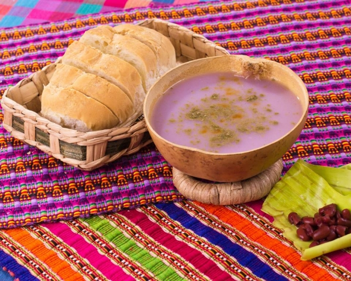
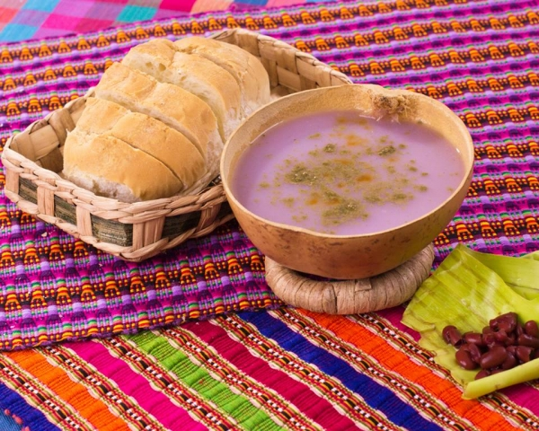

Our Gallery of Delicious Food
Here you will find a variety of dishes from El Salvador made with love.
Looking for a delicious and unique way to add some excitement to your meals? Yuca frita is the perfect solution! This tasty root vegetable dish is made from cassava, which has a similar taste and texture to potatoes. However, the preparation method is more involved, making it a fun and challenging dish to make. First, the cassava is steamed and then deep fried to a golden brown. This results in a crispy and flavor-packed dish that is sure to please everyone at the table. Whether you're serving it as a side or as a main course, yuca frita is sure to be a hit!
There's nothing quite like a hot, fresh tamale, and nobody does them better than El Salvador. Our tamales begin with a masa dough made from nixtamalized corn (hominy), which gives them a delicious, authentic flavor. They're then filled with your choice of meats, cheeses, or veggies, and wrapped in corn husks for steaming. The result is a tender, flavorful tamale that will leave you wanting more. So come on down to El Salvador and try the best tamales in the world!
Introducing our authentic Salvadorian quesadillas! The perfect warm afternoon treat, traditionally paired with a good cup of coffee. Our quesadillas have a subtle cheesy/creamy taste and the texture is sort of like cornbread, slightly grainy from the rice flour and sweetened with sugar. But don't worry, they're not like a cake! Our quesadillas are the perfect blend of savory and sweet, and we know you'll love them as much as we do. So come on in and try one today!
Salvadorans have been enjoying Atol chuco for centuries, and it's no wonder why - this delicious hot drink is made from fermented corn and has a rich, complex flavor that is simply unbeatable. Atol chuco is the perfect pick-me-up on a cold day, or whenever you need a little boost of energy. And there's no need to worry about caffeine jitters with this drink - Atol chuco is naturally caffeine-free. So next time you're in the mood for something warm and comforting, reach for a cup of Atol chuco - you won't be disappointed!

Looking for a delicious and refreshing drink that is perfect for any occasion? Look no further than Fresco de Cebada from El Salvador! Made with natural strawberry essence and a blend of spices, this drink is perfect for quenching your thirst on a hot day. The unique flavor of Fresco de Cebada will leave you wanting more and more. So don't wait any longer, try Fresco de Cebada today!

Salvadoran Ensalada Drink is the perfect drink to keep you cool on a hot summer day! This refreshing drink is made with water, milk, sugar, and flavorings. It is served cold and is sure to quench your thirst. Ensalada Drink is popular in El Salvador and is often served at parties and celebrations.
Most Popular Dishes
Looking for a delicious way to enjoy food? Look no further than Salvadoran dishes! Our most popular dishes are perfect for any occasion, whether you're looking for a quick and easy meal or something more substantial. From traditional favorites like pupusas and yuca frita to contemporary staples like chicken and rice, we've got something for everyone. And because all of our dishes are prepared with only the freshest ingredients, you can be sure you're getting the very best when you choose Salvadoran dishes.
-
Fresh ingredients
-
100% Salvadoran food
-
Good for every ocation
 
At SV Spot, we are on a mission to introduce the world to the delicious flavors of Salvadoran cuisine. Our unique value proposition is that we offer an authentic experience, sourcing our ingredients from local farmers and using recipes that have been passed down through generations. Our vision is to create a global community of lovers of Salvadoran food, who will appreciate its flavor and culture as much as we do.